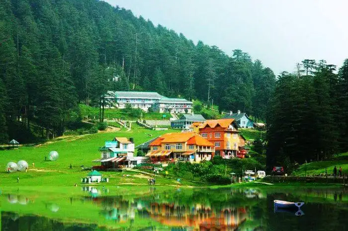

Khajjiar is often called the "Mini Switzerland of India" due to its striking resemblance to the Swiss landscape. This hill station near Dalhousie features vast meadows surrounded by dense forests and snow-capped peaks.
Khajjiar offers breathtaking natural beauty without the overwhelming crowds found in more popular Himachal destinations. The vast green meadow with a small lake in the center creates a picture-perfect landscape.
- Khajjiar Lake - a small lake in the middle of the meadow
- Khajji Nag Temple - an ancient temple dedicated to the serpent god
- Kalatop Wildlife Sanctuary - home to deer, bears, and pheasants
- Paragliding and zorbing activities
- Horse riding across the meadows
March to June for pleasant weather, or December to February for snow lovers. Monsoon months can be slippery and less enjoyable.
Khajjiar is about 24 km from Dalhousie. The nearest airport is Pathankot (about 120 km away), and the nearest major railway station is also Pathankot. From there, you can hire a taxi or take a bus to reach Khajjiar via Dalhousie.